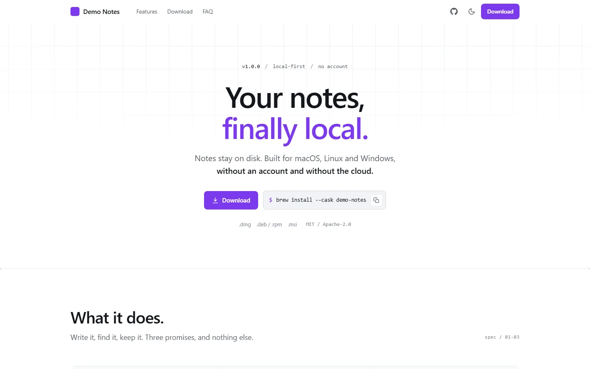

live preview ↗Classic
generic · baselinedistilled from an analysis of openlogi.org
The quiet one: hairlines instead of shadows, a subtractive navbar, isometric illustrations in the feature cards, light and dark themes. The download buttons resolve the latest GitHub release on their own.